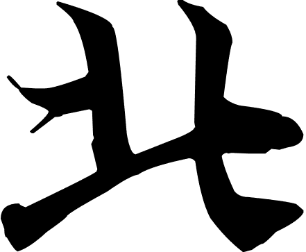
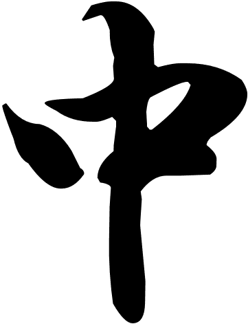
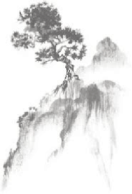
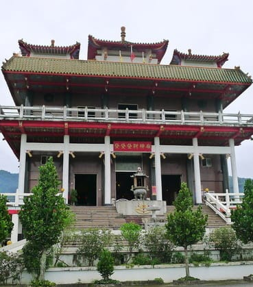
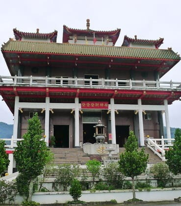

烘爐地南山福德宮
 新北市中和區興南路二段399巷160-1號
新北市中和區興南路二段399巷160-1號
 主祀福德正神。
主祀福德正神。
烘爐地就有著24小時開放的正廟，最出名的就是「子錢換錢母」的習俗，民眾拜完正殿後， 可繞到後方的石窟小廟許願、換錢母，求得錢母後，再摸摸土地公的鬍鬚、手杖、金元寶， 藉此招來財運。位在南勢角山麓，山頂平坦開闊，登上台階後可俯瞰台北盆地，美麗的夜景 總吸引眾多人潮晚上前來祭拜，香客絡繹不絕。而土地公像巨大的尺寸更是全台之最，有機 會到此不妨仔細觀察。
烘爐地就有著24小時開放的正廟，最出名的就是「子錢換錢母」的習俗，民眾拜完正殿後， 可繞到後方的石窟小廟許願、換錢母，求得錢母後，再摸摸土地公的鬍鬚、手杖、金元寶， 藉此招來財運。位在南勢角山麓，山頂平坦開闊，登上台階後可俯瞰台北盆地，美麗的夜景 總吸引眾多人潮晚上前來祭拜，香客絡繹不絕。而土地公像巨大的尺寸更是全台之最，有機 會到此不妨仔細觀察。


竹山紫南宮
南投縣竹山鎮大公街40號
主祀福德正神。
由於『北天燈 ．南烽炮．中丁酒』香火旺盛，在每年
農曆正月十六日吃丁酒是人潮最多時候，與中和烘爐地
的南山福德宮、屏東車城的福安宮並稱「三大土地公廟」。
民國五十年代左右，苗栗夫婦到此借金之神蹟傳述鄉里
而風聞寶島，一傳十，十傳百，造成紫南宮日後借金人
數倍增，作生意之人就以紫南宮土地公為借金生財的開
源門路，就此借金作為母金，來進行生財。
由於『北天燈 ．南烽炮．中丁酒』香火旺盛，在每年
農曆正月十六日吃丁酒是人潮最多時候，與中和烘爐地
的南山福德宮、屏東車城的福安宮並稱「三大土地公廟」。
民國五十年代左右，苗栗夫婦到此借金之神蹟傳述鄉里
而風聞寶島，一傳十，十傳百，造成紫南宮日後借金人
數倍增，作生意之人就以紫南宮土地公為借金生財的開
源門路，就此借金作為母金，來進行生財。


車城福安宮
屏東縣車城鄉福安路51號
主祀福德正神。
分靈各處的土地公多到數不清，每年都會有土 地公「大團圓」的祭典。其廟宇是採用中國北 方宮殿形式構造，為三進六層樓的建築，外觀 宏偉、金碧輝煌，號稱是台灣境內以及東南亞 最大的土地公廟。
分靈各處的土地公多到數不清，每年都會有土 地公「大團圓」的祭典。其廟宇是採用中國北 方宮殿形式構造，為三進六層樓的建築，外觀 宏偉、金碧輝煌，號稱是台灣境內以及東南亞 最大的土地公廟。
 

花蓮發發發財神廟
花蓮縣壽豐鄉月眉村三段131-3號
主祀龍德星君。
奉祀的是罕見的「龍德星君」與中央財神團，算 是花東地區最大的財神廟。這間廟除了像一般財 神廟求發財金外，還可以在這裡「洗錢」，用意 是跟財神換錢，以洗錢加持財氣。還有元寶礦活動 ，獲得財神爺恩賜3個聖筊，再燒1,200元的轉運金 後，才有資格到元寶礦裡挖寶。至於能不能挖到金 元寶、發財金或招財金牌，就得看個人財氣高下囉！ 不過1年只有一次開礦時間，得注意廟方公告。
奉祀的是罕見的「龍德星君」與中央財神團，算 是花東地區最大的財神廟。這間廟除了像一般財 神廟求發財金外，還可以在這裡「洗錢」，用意 是跟財神換錢，以洗錢加持財氣。還有元寶礦活動 ，獲得財神爺恩賜3個聖筊，再燒1,200元的轉運金 後，才有資格到元寶礦裡挖寶。至於能不能挖到金 元寶、發財金或招財金牌，就得看個人財氣高下囉！ 不過1年只有一次開礦時間，得注意廟方公告。